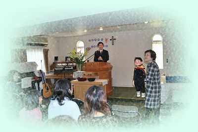

| 日本同盟基督教団 上大岡聖書教会 Kamiooka Bible Church |
| イースターのページ |
4月１２日 イースター礼拝のメッセージ 「死は勝利に飲まれた」（要旨） 菊池実牧師 聖書 1コリント15章50−58節 ・「死よ。お前のとげはどこにあるのか」 15:55 ・死を擬人化して、「お前はもう無力なのだ」と宣告する言葉 ・ホセア書13：14節の引用。救い主の到来の時に実現することとして預言した大胆な言葉 ・大胆であり、まったく異なる「いのち」の約束であること。 ・創世記3：18「土地は、あなたのために、いばらとあざみを生えさせ、あなたは、野の草を食べなければならない」。 ・アダムとエバ以来、「いばら、あざみ」＝とげは、聖書において一貫して呪い、裁き、神の厳しい審判を象徴するもの。 ・ホセア10：8「イスラエルの罪であるアベンの高き所も滅ぼされ、いばらとあざみが、彼らの祭壇の上におい茂る」。 ・ホセア13：14「わたしはよみの力から、彼らを解き放ち、彼らを死から贖おう。死よ。おまえのとげはどこにあるのか。 よみよ。おまえの針はどこにあるのか。あわれみはわたしの目から隠されている」 ・キリストが最大のとげである死を打ち破ったこと。 ・キリストがいばらの冠をかぶった意味。それは罰せられる者の姿、呪いと裁きを受ける姿。 まさに、私の代わりであること。 しかし、神に感謝すべきです。神は、私たちの主イエス・キリストによって、私たちに勝利を与えてくださいました。 ですから、私の愛する兄弟たちよ。堅く立って、動かされることなく、いつも主のわざに励みなさい。 あなたがたは自分たちの労苦が、主にあってむだでないことを知っているのですから。 （1コリント15：57･58） ・いばらのとげの痛みを感じつつ、しかしすでに「私が死んだ」こと、復活の命に与る救いを得たことを感謝して、 無駄でない労苦にも生きていきたい。 |
| 全員集合 | 礼拝説教（菊池牧師） | 洗礼式 （２名の方が洗礼を受けました） |
|  | ||
| 教会学校のイースター礼拝 | 「言ちゃん」（腹話術） | 教会学校のゲーム |
| 教会学校のお友たち | 玉子をゲットした | イースターエッグ |
| 中に命が宿っているとは思えない玉子。その殻を破って命が現れる。 イエス様も死（殻）を破って復活した。 玉子は復活のシンボルとされています。 |
||
| イースターエッグ | ||
| イースターうさぎ(Easter Hare) | チューリップに隠れた玉子 |
| |
| 日本同盟基督教団 上大岡聖書教会 主任牧師：徳梅陽介 伝道師：鈴木大輝 〒234-0052 横浜市港南区笹下 7-13-2 045-845-4536 |